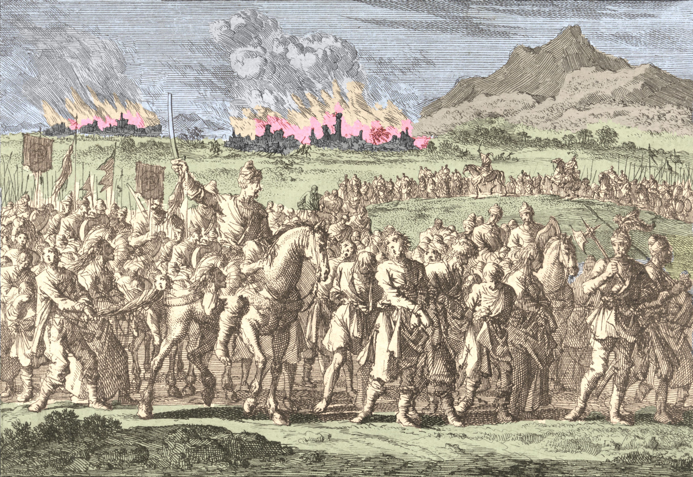
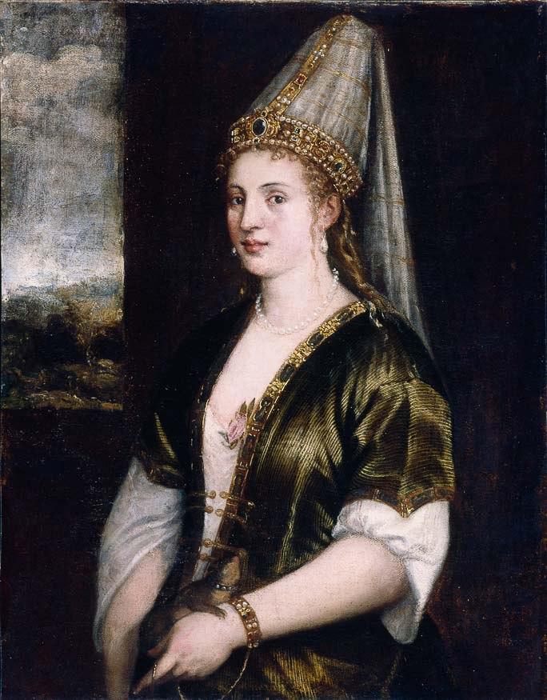
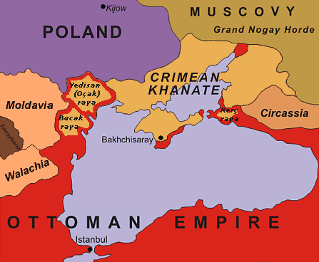
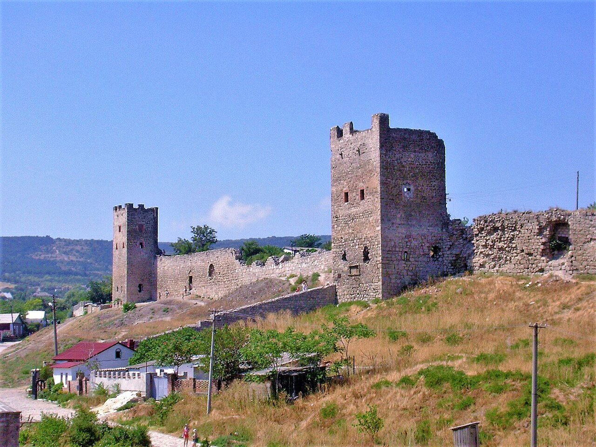
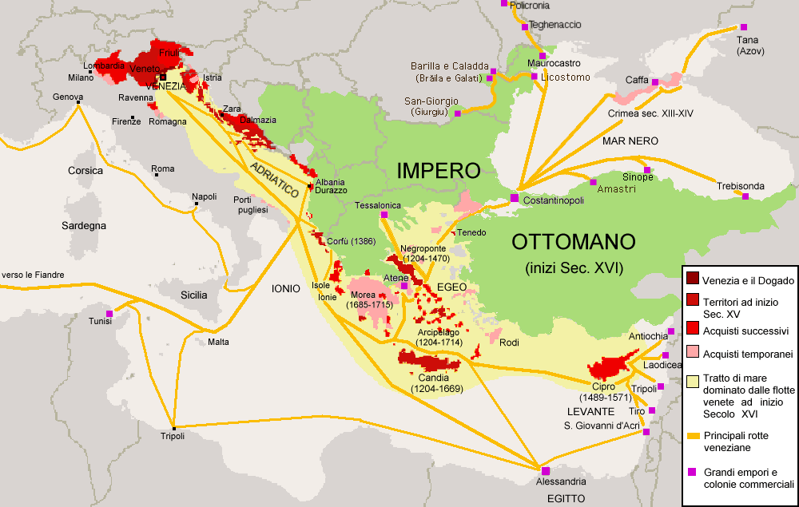
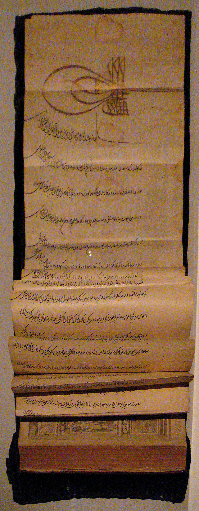
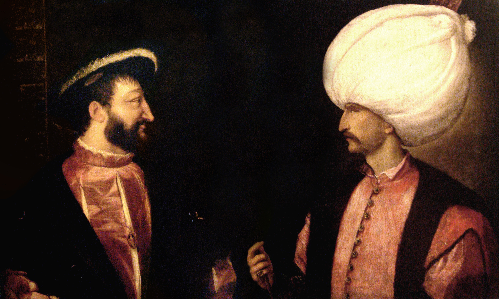

이스탄불 여행 (5) - 노예들과 치외법권
게시: 2025-12-11T06:30:01+09:00
1453년 오스만 투르크가 콘스탄티노플을 점령하여 이스탄불로 개명한 뒤, 오스만 투르크는 지나가는 선박들에게서 막대한 통행세를 거두어 대대로 잘 먹고 잘 살았습니다...라고 이야기가 끝나면 해피엔딩일까요? 해피 여부를 떠나, 일단 오스만 투르크가 실제로 걷어들인 통행세는 그다지 많지 않았습니다. 이유는 오스만 투르크가 일단 모든 외국 선박의 통행을 금지했기 때문이었습니다. 왜 오스만 투르크는 따박따박 월세가 나오는 건물에서 세입자들을 쫓아냈을까요? 이유는 간단합니다. 세입자를 쫓아내고 건물주가 직접 장사를 해야겠다고 작정했기 때문이었습니다. 그렇게 욕심 많은 건물주를 만나 쫓겨난 불쌍한 세입자는 어떻게 되었을까요? 실은 베네치아나 제노아나 불쌍한 세입자라고 보기엔 악랄한 부분이 많았습니다. 대표적인 부분이 바로 노예 무역이었습니다. 당시 이집트와 스페인, 이탈리아 등에서는 노예 수요가 많았는데, 그걸 거의 독점적으로 공급하던 것이 바로 베네치아와 제노아였습니다. 제노아는 흑해 크림 반도의 카파(Caffa, 지금의 Feodosia)에, 베네치아는 아조프해의 타나(Tanan, 지금의 Tanais)에 식민도시를 건설하고 킵차크 한국 및 크림 한국 등으로부터 곡물 뿐만 아니라 많은 노예를 사들여 지중해에 내다 팔았습니다. 그 노예들은 어디서 나왔을까요? 킵차크 한국 및 크림 한국 등의 몽골족과 타타르인들이 전문적인 노예 사냥을 통해 잡아들인 슬라브인들 및 투르크인들, 체르케스(Circassians, 혹은 Cherkess)인들이었습니다.

(15세기 중반부터 시작된 크림 한국의 타타르인들 및 몽골인들의 동유럽 노예 사냥은 이들에게 매우 중요한 경제 활동이었습니다. 흑해 북쪽에 근거지를 둔 이들이 러시아나 우크라이나는 물론 굳이 저 멀리 발칸반도와 헝가리, 폴란드까지 진출하여 사람들을 잡아다 노예로 판 이유는 의외로 종교 때문이었습니다. 이슬람에서 무슬림은 노예로 사고 팔 수 없도록 금했기 때문입니다. 따라서 이슬람을 받아들인 그 일대의 투르크인과 킵차크인들을 잡아다 팔 수는 없었고 굳이 저 멀리 동유럽까지 가서 사람들을 잡아와야 했던 것입니다. 이 그림은 1666년 폴란드에서 주민들을 노예로 잡아가는 타타르인들의 모습입니다. 이런 노예 사냥은 18세기 중반까지도 이어졌고, 헝가리에서는 1717년까지도 큰 규모의 노예 사냥꾼들의 습격이 있었습니다.)

(이런 노예 매매는 언제나 비극인데, 특히나 여성들에게는 더욱 가혹한 운명이 기다리고 있는 경우가 많았습니다. 하지만 가끔 미모 덕분에 팔자를 고치는 사례가 나오긴 했습니다. 대표적인 것이 술레이만 대제의 정실 부인이 된 록셀레나(Roxelana, Hürrem Sultan)입니다. 10대 초반의 나이에 당시 폴란드 땅이던 우크라이나에서 크림 한국의 노예 사냥꾼들에게 나포되어 이스탄불로 팔려온 그녀는 하렘의 노예로 시작했으나, 그녀에게 흠뻑 빠진 술레이만 대제의 총애를 받아 정실 부인이 되었고, 그녀의 아들이 셀림 2세로 즉위했습니다. 록셀레나는 오스만 투르크 역사상 가장 영향력이 막강했던 여성으로 기록되어 있습니다.)
(그런 크림 반도에서 팔려온 노예는 이탈리아에서도 꽤 많았습니다. 이 그림은 15세기 메디치가 출신의 사제이자 수도원장인 Carlo de' Medici의 초상화입니다. 그는 은행가 Cosimo de' Medici와 그 집안의 노예 여성 사이에 태어난 혼외자였는데, 그의 어머니는 크림 반도에서 팔려온 체르케스(Circassian)인이었습니다. 그의 얼굴 생김새, 특히 메디치 가문에서는 볼 수 없었던 푸른 눈은 그가 어머니에게서 물려 받은 것이라고 합니다. 혹자는 이 초상화 속의 짙은 피부색 때문에 그의 어머니가 체르케스인이 아니라 아프리카계일 수도 있다고 주장하지만 저 진한 피부색은 세월의 흐름에 따라 물감의 색이 변질되어서 그런 것이라고 합니다.)

(체르케스(Circassa, Cherkess)라는 민족명은 우리에게 다소 생소한데, 이들은 원래 저 지도 속 흑해 동해안 지역에 살던 민족입니다. 14세기 경 이들 대부분은 이미 이슬람을 받아들였으므로 원래 이들은 노예 사냥의 대상이 될 수 없었으나, 돈벌이에 눈이 먼 크림 한국과 오스만 투르크에서는 일부 체르케스 부족들은 이단이라고 선언하고 노예 사냥 대상으로 삼았다고 합니다. 이들이 우리에게 생소한 이유는 18세기 초, 러시아의 표트르 대제가 이들의 땅을 침공하고 인종 학살을 벌였기 때문입니다. 이들은 결국 오스만 투르크 영토 내로 뿔뿔이 흩어졌습니다.) 양말 장사를 하던 상인이 큰 돈을 벌면 양말 공장을 아예 사버릴까 하는 생각을 하기 나름입니다. 오스만 투르크도 똑같았습니다. 오스만 투르크는 콘스탄티노플을 차지한 1453년 바로 그 해에 함대를 흑해 안으로 보내 크림 반도의 제노바 식민도시 카파를 공략하려 했습니다. 오스만 투르크가 보스포러스 해협을 완전 차단했으니 이제 카파는 끈 떨어진 연 신세로서, 그냥 내버려두어도 자연사할 것이 뻔했습니다. 그런 카파를 굳이 그렇게 일찌감치 공격하려 한 것을 보면 어지간히 돈 욕심이 났나 보다 싶겠습니다만, 당시만 해도 아직 흑해 연안이 모두 오스만 투르크의 것이 아니었습니다. 그러니 이제 말라죽기 일보직전인 카파를 다른 놈들이 따먹기 전에 서둘러 손에 넣어야 했던 것입니다. 실은 이미 카파의 제노바인들은 이미 크림 한국의 타타르인들의 포위 공격을 받고 있었습니다. 카파를 제노바에게 돈을 받고 판 것이 몽골인들이긴 했지만, 킵차크 한국의 몽골인들과 제노바인들이 항상 사이가 좋은 것은 아니라서 14세기 초반부터 제노바인들은 몽골인들과 간헐적인 전쟁 상태에 있었고, 한 번은 카파를 완전히 빼앗기기도 했습니다. 킵차크 한국이 약화되면서 여기저기서 들고 일어난 다양한 타타르 및 투르크 부족들도 카파를 노렸는데, 당시 아직 자리가 완전히 잡히지 않은 크림 한국의 타타르인들도 카파를 공격하고 있었던 것입니다. 바다에서 함대를 이끌고 나타난 오스만 투르크에 대해 다행인지 불행인지 타타르인들은 협조적으로 나왔고, 이들은 연합하여 카파의 제노바인들을 공격했습니다. 그럼에도 불구하고 이 공격은 결국 성공하지 못했지만, 크림 한국은 오스만 투르크의 제후국이 되어 주종관계가 되었습니다.

(아무리 본국 제노바와의 교통편이 끊어졌다고 해도, 카파는 쉽게 함락되지 않았습니다. 여기는 제노바가 200년 가까이 단단한 성을 쌓고 요새화한 곳이기 때문이었습니다. 사진은 카파에 남아있는 제노바의 옛성채입니다.) 일단 이스탄불로 회항한 오스만 투르크에게 머리를 조아리며 나타난 사람들은 바로 제노바 사람들이었습니다. 이들은 완전히 수그리고 들어와, 조공도 바치고 통행세도 바칠 테니 제발 보스포러스 해협에 대한 통행권을 달라고 읍소했습니다. 오스만 투르크로서도 당장 카파를 손에 넣지 못한 상태에서 황금알을 낳는 거위를 굳이 잡을 필요가 없었습니다. 오스만 투르크는 이들에게 안전한 무역 활동을 보장하면서, 조공과 함께 이슬람 상인들에 비해 꽤 높은 관세를 부과했습니다. 그러나 기본적으로 제노바의 무역선은 자유 통행권을 받지 못했고, 매우 제한적인 활동만 허락되었습니다. 제노바의 경쟁자인 베네치아는 더 후한 대우를 받았습니다. 제노바가 1453년 콘스탄티노플 함락 때 비잔틴 편에서 싸운 것에 비해, 베네치아는 일찌감치 분위기를 파악하고 중립을 표명했기 떄문이었습니다. 그리고 베네치아도 흑해 안 아조프(Azov) 해의 식민도시 타나(Tana)를 살리기 위해서 반드시 오스만 투르크와 우호 관계를 맺어야 하는 절박함이 있었습니다. 그래서 1454년, 베네치아는 오스만 투르크 최초의 치외법권 특혜(capitulation)를 받습니다. 베네치아는 제노바 등 다른 유럽 상인들에 비해 더 낮은 관세와 통행세를 부과 받았고, 특히 오스만 투르크 영내에서 벌어진 베네치아인들 사이의 사건에 대해서는 베네치아 영사가 사법권을 가지는 등의 특권을 받았습니다.

(베네치아의 무역로와 각지의 무역 거점입니다. 지도 오른쪽 위 아조프해 연안에 타나(Tana)가 보입니다.)

(1540년 베네치아와 새로 맺은 치외법권 특혜(capitulations) 문서입니다.) 그러나 기본적으로 흑해 무역은 이슬람 상인들에 의해 운영되었습니다. 대부분의 유럽 상선들은 이스탄불까지만 통과가 허용되었고, 거기서 이슬람 상인들이 흑해에서 사온 노예와 곡물 등의 상품을 더 비싼 가격에 사가야 했습니다. 그리고 흑해 안의 제노바와 베네치아의 식민도시들도 서서히 쇠락하며, 결국 오스만 투르크의 손에 들어왔습니다. 가령 모두가 그토록 탐을 내던 카파도 결국 1475년 오스만 투르크 함대에 의해 함락되었고, 항복한 이탈리아계 주민들은 모두 이스탄불로 강제 이주 조치를 당했습니다. 그 결과, 콘스탄티노플 함락 이후 스페인과 이탈리아 등에는 더 이상 크림 반도에서 수출된 노예가 공급되지 않았습니다. 그렇다고 노예제의 비극이 끝난 것은 아니었습니다. 이후 유럽에서는 사하라 사막 이남의 흑인 노예들을 사들이기 시작했고, 슬라브 노예들은 오스만 투르크의 허락과 후원을 등에 업은 타타르에 의해 계속 사냥되어 이집트와 오스만 투르크에서 활발히 거래되었습니다. 가령 16세기에 리트빈(Mikhalon Litvin)이라는 리투아니아인이 남긴 기록에 따르면, 오스만 투르크의 손에 들어간 카파는 '도시가 아니라 우리의 피를 빨아먹는 암흑의 구덩이'였습니다.

(이 그림은 르네상스판 포토샵이라고 할 수 있습니다. 왼쪽은 프랑스의 프랑수와 1세이고, 오른쪽이 오스만 투르크의 술레이만 대제인데, 동맹을 맺은 기념으로 그려진 것입니다. 하지만 거리도 있고 해서, 이 두 사람은 한 번도 직접 만난 적은 없었습니다. 이 그림은 두 사람의 각각 따로 그린 초상화를 보고 하나로 그린 것입니다.) 다만 한 번 시작된 치외법권 특혜(capitulations)는 점점 늘어나기 시작했습니다. 그 계기가 된 것은 합스부르크와의 분쟁이었습니다. 오스트리아의 수도 빈을 2번이나 포위했으나 결국 정복에 실패하고, 해상에서 합스부르크가 주도하는 신성연합(Holy League) 세력에게 동부 지중해에서의 제해권을 위협당한 술레이만 대제는 적의 적은 나의 친구라는 생각에서, 프랑스의 프랑수와 1세(François I)가 내민 동맹 제의를 받아들이고 과거 베네치아에게 허락했던 치외법권 특혜를 프랑스에게도 준 것입니다. 치외법권 특혜의 핵심은 사법권보다는 낮은 관세와 통행세였습니다. 이 특혜는 몇 십년 뒤에 영국과 네덜란드에게도 허용되었고, 시간이 더 지난 뒤에는 오스트리아와 러시아, 덴마크 등에게도 허용되었습니다. 그러나 아직 오스만 투르크는 유럽을 벌벌 떨게 하는 막강한 군사력을 가진 동지중해의 초강대국이었고, 유럽산 제품에 대단한 경쟁력이 있지도 않았습니다. 또한, 보스포러스 해협을 자유롭게 통행할 권리는 여전히 오스만 투르크 상선들에게만 있었습니다. 따라서 그런 치외법권 특혜가 오스만 투르크의 산업과 경제에 딱히 불리하지도 않았습니다. 하지만 결국 오스만 투르크도 점점 쇠락의 길을 걷게 되었습니다. 특히 흑해 쪽에서 새로운 강대국이 출현하면서 보스포러스 해협의 문을 두드리기 시작했습니다. 바로 러시아였습니다.